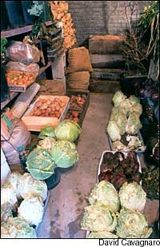
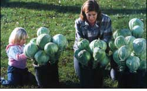
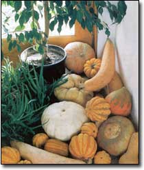
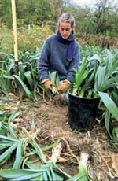
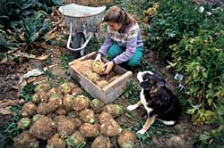

Picture yourself on a frosty Christmas Day serving your own tomatoes or carrots so sweet they’re like candy. And there you are in January, pulling crisp, fresh, raw heads of Chinese cabbage from a box in your cool cellar. Now it’s February, and in one hand, you’re hefting one of those big, rough-looking but fine-grained ‘Long Season’ beets for dinner and, in the other hand, several apples for the lunch box. Fast-forward to March, and you’re returning to the warm kitchen with a fistful of carrots. Even in April? Of course. That’s you proudly adding your own garden-grown potatoes and garlic to the dinner menu. In May, you might even find yourself, as we have, eating homegrown sweet potatoes. If you don’t grow a garden, you can buy carefully grown local vegetables in the fall, when they are at peak condition and prices are low, and store them for winter.
As a gardener or farmer’s market customer, you know how satisfying each season can be - the first luscious pickings of tender spring lettuce, then peas, then tomatoes; the fullness of summer, when our vegetable basket seemingly overflows with abundance; the ripeness of autumn with its bittersweet feelings of completion. Although the long-awaited summer has ended, that tinge of melancholy is tempered by mellow days when we harvest or buy from the local market those last squash, potatoes and beets.
Perhaps you’re ready, then, to add a whole new dimension to your annual calendar of gardening satisfactions: using natural cold storage to keep your homegrown or market-bought food on the table all winter long. This special three-part section, will tell you how to keep last year’s harvest safe and sound, whether it’s outside in more temperate climates, or in a home-built root cellar in colder areas.
The satisfaction you get from keeping fresh produce into the winter months without processing it is rooted in several accomplishments: Maintaining the fine quality of your organically grown food, making your garden more productive and learning a new skill to decrease your dependence on processed food.
You can, by the way, practice root cellaring without actually having a walk-in root cellar. In researching our book, Root Cellaring: Natural Cold Storage of Fruits and Vegetables, my husband, Mike, and I found that clever gardeners have worked out a whole range of different storage options, from a drain tile buried in the yard, to straw-insulated above-ground mounds (called ‘clamps’), to storage drawers built into the risers of a cool basement staircase. To us, these ingenious devices, meant to suit a particular situation, are true folk crafts. To our delight, we discovered that some really quirky setups worked quite well.
Once you start root cellaring, you’ll find the advantages are as practical as they are satisfying.
They include:
• Well-grown produce raised on composted soil is more nutritious and safer to eat than the same produce raised on chemically fertilized soil and treated with pesticides and fungicides.
• The fresh, raw fruits and vegetables you bring to the table from your root cellar contribute valuable enzymes and fiber to winter meals. Cabbage and other cruciferous vegetables contain antitumor compounds. Squash actually increases in vitamin A content during storage. It seems safe to assume the same is true of pumpkin. Far from being mere side dishes, these and other vegetables are essential to your good health.
• The complex carbohydrates in carrots, beets and other root vegetables are valuable components in diabetic food plans and in many diet plans.
Because root cellar storage doesn’t depend on electricity or gas, it isn’t vulnerable to power outages like your freezer is. A root cellar also can save money on your gas or electric bill, if you substitute, say, cold storage of fall-ripening, long-keeping tomato varieties for some of the canning or freezing that you usually do. And the money you save on canning jar lids will buy a few packets of seed.
Having your own ready supply of some basic meal ingredients like potatoes, onions, beets, apples, garlic and such means you won’t need to drive to the grocery store so often; one of my least-favorite chores is running to the store for a single missing ingredient to make an evening meal.
In recent years, we’ve all heard advice on being prepared for a serious interruption in food supply or electric power, or for other emergencies. Having a system of home vegetable storage adds another margin of security to any supplies (water, vitamins, radio and batteries, dried foods, etc.) that you already might have assembled.
On a happier note, a root cellar can make it possible for you to enjoy some special food treats in the dead of winter - the little luxuries such as tender Belgian endive and crisp celery.
Natural cold storage dovetails beautifully with the best use of your garden space. Many storage crops can be grown as succession crops after early peas, lettuce, radishes, spinach and snap beans. This fall crop is the second half of the growing season, the half we miss out on if we don’t replant. When you have a cold place waiting for them, these fall-harvested vegetables can carry you well into a new-year bonus of productivity from the same patch of garden soil.
Raising or buying storage crops also can give you a new appreciation for seasonal eating. In spring and summer, we enjoy the fresh, delicate produce at its best, but we don’t chase after peas and strawberries when their season is done. Rather, we savor the earthy, hearty flavors of carrots and apples, beets and rutabagas, onions and potatoes.
Many gardeners tell me they too feel the impulse to ‘put something by’ when summer wanes. Perhaps the squirreling instinct is rooted in human nature. People have been making use of natural cold storage for centuries. By comparison, our more-recent dependence on outside power sources to produce, transport and preserve food is but a moment in time.
There’s a deep satisfaction in acting on that impulse, in finding we can provide for our families by keeping food we’ve grown. All the arts of gardening - thoughtful planning, thorough soil preparation, timely planting and careful harvest - come together in this time-honored art of keeping the goods from our gardens, giving us gardeners yet another reason to exult in our generous provisioning.
Whether you start with a cold drawer, a garden trench or an enclosed room, may you find great pleasure, and good eating, in practicing natural cold storage.
Nancy Bubel is co-author with her husband, Mike, of Root Cellaring: Natural Cold Storage of Fruits and Vegetables. You can order it from www.MotherEarthNews.com or Nancy also is a former editor with Mother Earth News and author of The New Seed-Starters Handbook, Rodale Press.
|
 David Cavagnaro A well-stocked root cellar can keep garden-fresh produce on your table from the close of one growing season until the opening of the next. For construction plans. |
 David Cavagnaro Cabbages are stored most successfully by being replanted in groups in large pots for placement in a cold, moist root cellar. |
 David Cavagnaro Most winter squash keep nicely in a cool, dry corner or closet. |
|
 David Cavagnaro Trim back the tops and knock the dirt off of freshly harvested leeks, and then pack as many as you can fit into large pots, repacking the soil around the roots as you fill the pots.Water thoroughly, le drain and store in the cold-and-moist section of your root cellar. |
 David Cavagnaro For root cellar storage, pack carrots, beetsand celeriac roots (shown above) in sand, and keep them cold (between 32 and 40 degrees) and very moist (90-percent to 95- spercent relative humidity). |
|